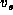
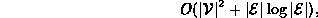

Data Structures and Algorithms
with Object-Oriented Design Patterns in Java
Data Structures and Algorithms
with Object-Oriented Design Patterns in Java
An implementation of Prim's algorithm is shown in Program  .
This implementation is almost identical
to the version of Dijkstra's algorithm
given in Program .
In fact, there are only four differences between the two algorithms.
These are found on lines 3, 29, 39, and 41.
.
This implementation is almost identical
to the version of Dijkstra's algorithm
given in Program .
In fact, there are only four differences between the two algorithms.
These are found on lines 3, 29, 39, and 41.
The PrimsAlgorithm method takes two arguments.
The first is an undirected graph instance.
We assume that the graph is edge-weighted
and that the weights are instances of the
Int class defined in Program .
The second argument is the number of the start vertex, .
The PrimsAlgorithm method returns a minimum-cost spanning tree represented as an undirected graph. Therefore, the return value is a Graph.
The running time of Prim's algorithm is asymptotically the same as Dijkstra's algorithm. That is, the worst-case running time is

when adjacency lists are used, and

when adjacency matrices are used to represent the input graph.
 Copyright © 1998 by Bruno R. Preiss, P.Eng. All rights reserved.
Copyright © 1998 by Bruno R. Preiss, P.Eng. All rights reserved.